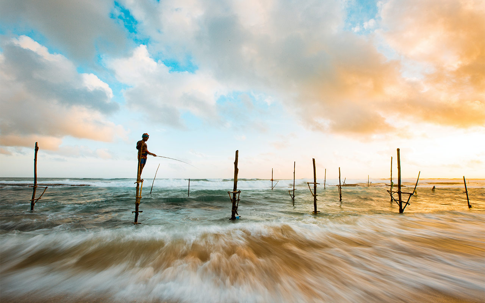
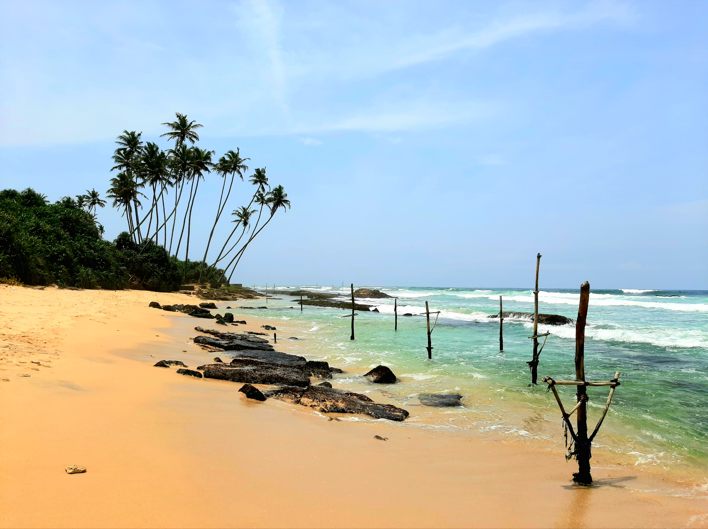
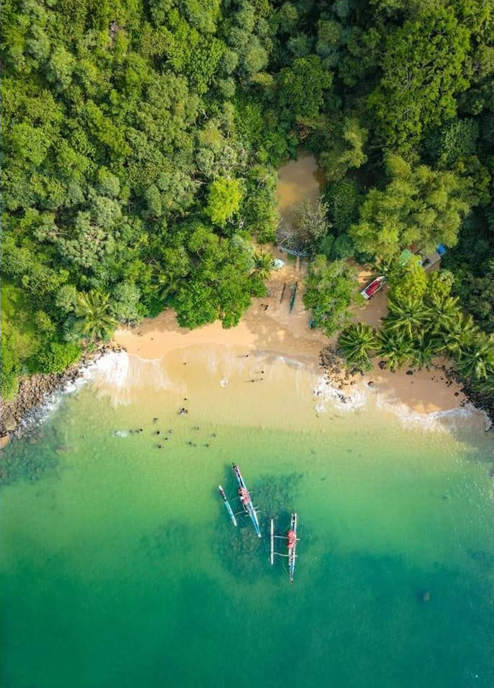

Memories are made in flip-flops
On this list of best beaches in Sri Lanka, a name sure to appear is Unawatuna Beach. Just an hour
away from Sri Lanka's capital city, Colombo, this beach is a heaven for beach bums. With fancy
restaurants, bars, shacks, beach properties, shopping streets and fun activities worth engaging in
that are carried out in the surrounding areas, Unawatuna beach is a great spot to unwind, ditching
the routine.
The beach looks like a banana and has golden sand with sparkling water. Here, the lush palm trees
not only make the beach look extra scenic but also contribute to keeping the environment pleasant
on most days.
Best time to visit:
Late August and early September as the rain starts to set by mid-Octobe Hikkaduwa The beaches in Hikkaduwa have been attracting tourists since
the 1960s when it was
first discovered. The beach stretches on spanning over kilometers and hosts many fun
activities to keep the tourists engaged. These water sports include snorkeling and scuba
diving for the adventure seekers. The clear waters beckon the nature lovers who wish
to take a dip inside the waters to witness the vibrant, colorful aquatic life. The coral
sanctuary hosts gorgeous coral formations, which house a variety of fishes and large
turtles. The islets along the beach breed pockets of wildlife and are a wonderful way to
interact with it.
Hikkaduwa is famous for serving delicious seafood curries, relaxing massages, Buddhist
temples, and watersports such as surfing, snorkeling, and diving. The beaches in
Hikkaduwa may not be at par with Bali or Goa, but it does attract a fair amount of
regulars.
1. Narigama Beach: Watch the Sunset
2. Coral Reef Gardens: Explore the underwater world
3. Splash Around at the Laguna
4. Water sports: Lets have some fun
5. Sunken ships of Hikkaduwa: Witness the shipwrecks
Best time to visit:
March to September Koggala Koggala is a small homely town which was built around the Second World War right after the Japanese air strikes. You can witness the rarest species of turtles in this region. Thats not all. This beach is famous among locals and tourists for its Instagram-worthy spots and the adventure sports that you can pursue here. Youll have the time of your life here!
Best time to visit:
July end to October jungle beach 
Located west to Unawatuna, Jungle Beach is a pretty bay nestled in a forested area. It is one of the
secret gems of Sri Lanka which has everything to make your holiday experience one of its kind. The
place retains its pristine natural charm as it is not ventured by a large number of tourists throughout
the year due to its secluded location.
Jungle Beach offers a plethora of water sports such as snorkelling, scuba diving, swimming, boat
ride and many more. The reefs jutting out of water a few metres offshore make a good site for
snorkelling which introduces you to the exotic marine life of the region. Apart from schools of
colourful fishes you will spot moray eels, encounter crabs, barracudas, trigger fish and many other
reef dwelling creatures. The other activities you can indulge in Jungle Beach include whale watching,
visiting historical ruins, jungle hiking and many more.
There are top notch resorts and cabins at Jungle Beach furnished with plush amenities and offering
you a tranquil retreat amidst the jungle settings. The resorts and cabins have private walkways
which will lead you to the calm shoreline caressed by the lapping waves of the Indian Ocean. You
can savour traditional Sri Lankan cuisine in a communal restaurant or enjoy private dining on a
beachside restaurant. In a nutshell, Jungle Beach is the place which awaits you to explore its hidden
treasure and spend your vacation in style and luxury.
The best time to visit
Jungle Beach is during the dry months (December- March).